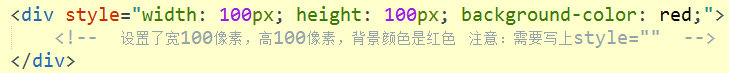
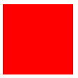
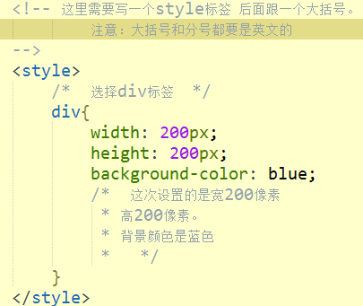
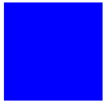
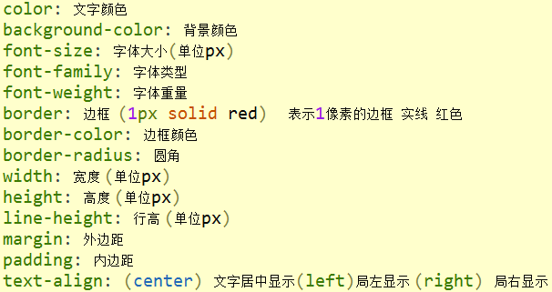

前端基础之CSS
知识预览
CSS初识
常用属性
CSS初识
CSS是什么
CSS不仅可以静态地修饰网页，还可以配合各种脚本语言动态地对网页各元素进行格式化。
CSS 能够对网页中元素位置的排版进行像素级精确控制，支持几乎所有的字体字号样式，拥有对网页对象和模型样式编辑的能力
CSS怎么写
CSS有两种写法
第一种

运行后可以看到一个宽100px高100px的红色的正方体

第二种写法

运行后可以看到一个宽200px高200px的蓝色的正方体

CSS常用属性

上一篇->form表单